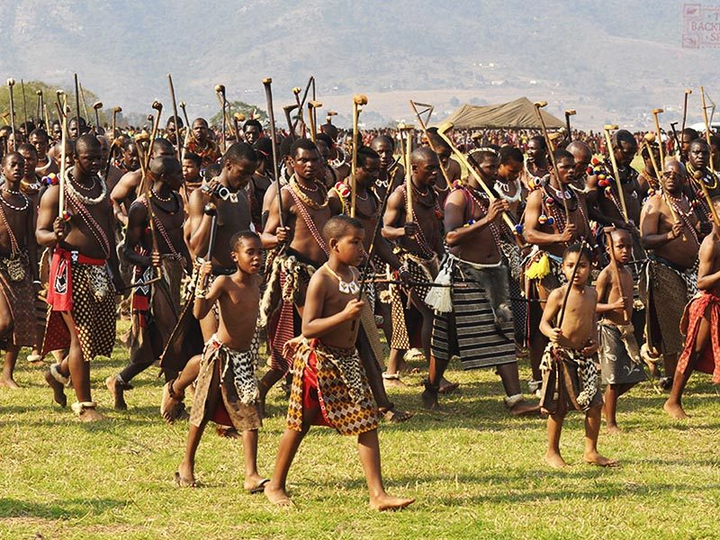

The annual Umhlanga Reed Dance marks the biggest cultural gathering of the Swazi people. Coming after an eight-day ceremony, unmarried girls gather in a centipede-like structure and dance with reeds. The festival begins in late August or early September and aims to strengthen bonds of community amongst a new generation of homemakers. A captain, locally known as ‘induna’ is appointed by the royal family to announce and organize the ceremony. The use of the reed as the official mascot is a nod to the historical relevance of the plant to the lives of the Swazi people.
